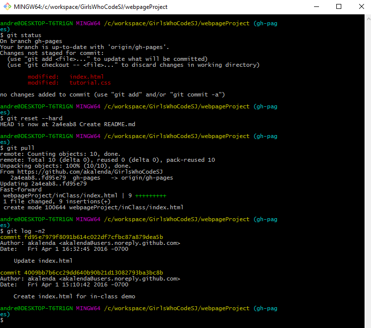

Welcome, traveler

I am Sir Grumpycat, and I am lord of this webpage.
Try clicking on the canvas square just below. Also, try clicking on the cat image above. Want to know how it's done? Right-click to inspect the web page, then look at the sources. It's a combination of HTML, and the Javascript found in catBlink.js!
Harken, for there are many other things we could put into a webpage, but this is a fine beginning to our journey.
Tired of editing changes online? Want to save your webpage onto your computer and work there, and then upload changes? You'll need Git installed on the computer. There's a lot of ways to do it; here's a few:
First option: No-frills Git. This requires you to use the "Command Line Interface", where you type things out. It looks like this: 
Second option: Github Desktop. This is designed specifically to be used with Github and has a nice user interface. Recommended!
Finally: Other GUI options. If you ever end up using Git with something besides Github, these can be nice. Perhaps you'd like to create your very own Git server?